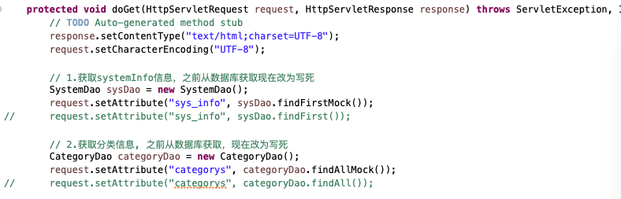
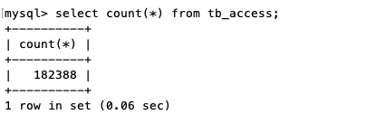
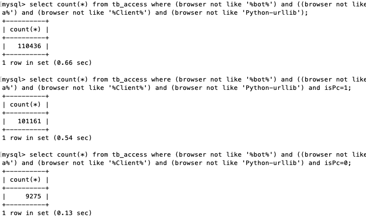
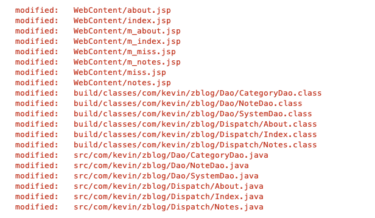
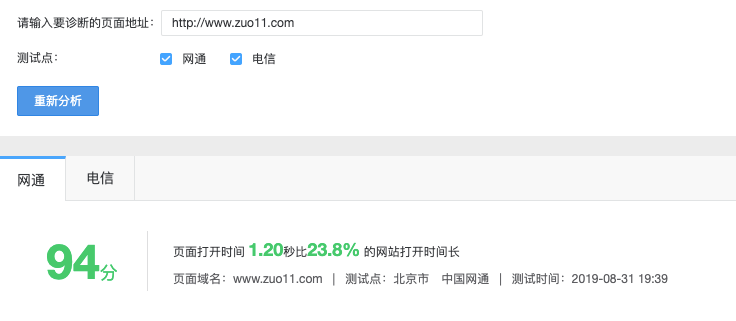

站点优化 页面打开较慢处理
最近发现打开速度太慢，由于后台是java写的，好久没碰了，基本忘干净了。就一直拖着没处理，现在有时间了，还是硬着头皮优化了下，打开速度提升了很多。

背景
博客的代码是2017年初完成的，后面基本没怎么维护了。两年多了，当时的技术栈还是java + jQuery，现在早已放弃了java，主要还是往前端方向发展。后台相关只研究node。这次发现网页太慢了，新的博客版本还没规划好，暂时先优化下这个博客。
代码托管
之前的代码都是现在Eclipse里完成，然后导出，再通过ftp传到服务器。再手动更新。版本控制都没用到，这次在本地git init，初始化了一个git仓库。然后在gitlab创建了一个私有库，和本地的仓库关联，把代码放到gitlab就好多了。至少不用怕代码丢失了。
速度慢的原因分析
准备把代码跑起来看看原因，发现代码跑不起来，提示本地myblog数据库不存在。由于mac重装了mysql，之前是5.6的版本，现在升级为8.0了。之前的数据库貌似丢了。从服务器dump了一份数据，本地创建了myblog数据库，然后通过source导入数据（大概33M，主要是tb_access的数据，记录了蜘蛛抓取及正常访客的所有ua、ip的信息）。数据导入后就可以正常访问了。发现本地都很慢，那就不是服务器配置的问题了。跟代码有关。

代码分析
先找到主页的入口页面。index.woe，发现有几个问题
- 代码写的很乱，命名不规范
- 频繁查询数据库，影响速度
index页面代码问题1
之前不知道怎么想的，把systemInfo也就是网页的title、keywords，description都放到数据库，每次都从数据库读取，每次都会都一次数据库查询，现在改为写死。因为这种基本不怎么更新。分类信息比较少，每次从数据库找也耗时，就写死了。提高速度。
// 1.获取systemInfo信息，之前从数据库获取现在改为写死
SystemDao sysDao = new SystemDao();
request.setAttribute("sys_info", sysDao.findFirstMock());
// request.setAttribute("sys_info", sysDao.findFirst());
// 2.获取分类信息, 之前从数据库获取，现在改为写死
CategoryDao categoryDao = new CategoryDao();
request.setAttribute("categorys", categoryDao.findAllMock());
// request.setAttribute("categorys", categoryDao.findAll());index页面代码问题2
获取笔记信息之前是分4条sql去取 。现改为用一条sql取，然后根据类型自动分配到4个变量。（由于前端代码不想改动，尽量按原来的数据格式输出），另外发现再将数据库查询的Map数据转为List<Node>时，居然每次都去数据表用分类id来换分类名称，，太恐怖了。不知道之前为啥会这么写，也修改为本地获取。
// 3.获取笔记信息
NoteDao noteDao = new NoteDao();
Map<String, Object> noteall = noteDao.findAllNew();
request.setAttribute("notes_c", noteall.get("notes_c"));
request.setAttribute("notes_web", noteall.get("notes_web"));
request.setAttribute("notes_apue", noteall.get("notes_apue"));
request.setAttribute("notes_ios", noteall.get("notes_ios"));
// List<Note> notes_c = is3.findC();
// request.setAttribute("notes_c", notes_c);
// List<Note> notes_web = is3.findWeb();
// request.setAttribute("notes_web", notes_web);
// List<Note> notes_apue = is3.findAPUE();
// request.setAttribute("notes_apue", notes_apue);
// List<Note> notes_ios = is3.findIOS();
// request.setAttribute("notes_ios", notes_ios);
// if(request.getParameter("action") != null) {
// request.getRequestDispatcher("m_index.jsp").forward(request, response);
// } else {
// request.getRequestDispatcher("index.jsp").forward(request, response);
// }修改后的部分NoteDao代码
Map<String, String> cate = new HashMap<String, String>();
cate.put("32","C语言&&C");
cate.put("33","UNIX高级编程&&APUE");
cate.put("34","Web&&Web");
cate.put("36","iOS&&iOS");
...
note.setCategory(cate.get(map.get("category_id")+""));
note.setRelay_count(Integer.parseInt(map.get("relay_count")+""));
note.setStatus(Integer.parseInt(map.get("status")+""));
switch(map.get("category_id")+"") {
case "32":
notes_c.add(note);
break;
case "33":
notes_apue.add(note);
break;
case "34":
notes_web.add(note);
break;
case "36":
notes_ios.add(note);
break;
}
}
Map<String, Object> allNote = new HashMap<String, Object>();
allNote.put("notes_c", notes_c);
allNote.put("notes_apue", notes_apue);
allNote.put("notes_web", notes_web);
allNote.put("notes_ios", notes_ios);index页面代码问题3
访问量这里也是查了4次数据，由于过滤了部分有蜘蛛特征的数据，且数据已经18W了，每次查询都挺耗时的，而且还是分几次查询，本地查询都要1s多.....暂时没想到好的办法，访问数据直接按之前的访问量写死了。待后续优化表结构，来处理这个问题。
select count(*) from tb_access where (browser not like '%bot%') and ((browser not like '%spider%')) and (browser not like '%sitemap%') and (browser not like '%Alibaba%') and (browser not like '%Client%') and (browser not like 'Python-urllib');
总访问量
// int access_total = accessDao.findCountAll();
// int access_pc = accessDao.findCountWithPC();
// int access_mobile = accessDao.findCountWithMobile();
// int notes_reply = is3.findRelayCountAll();
// request.setAttribute("access_total", access_total);
// request.setAttribute("access_pc", access_pc);
// request.setAttribute("access_mobile", access_mobile);
// request.setAttribute("notes_reply", notes_reply);
request.setAttribute("access_total", 110434);
request.setAttribute("access_pc", 101159);
request.setAttribute("access_mobile", 9275);
request.setAttribute("notes_reply", 5);
//System.out.println(access_pc);
String url = "index.jsp";
if (user.getIsPc() == 0) { // 判断是否为移动端
url = "m_index.jsp";
}
request.getRequestDispatcher(url).forward(request, response);
}其他页面的问题
和index页面类似，改改就好了。
评论的广告问题
畅言评论系统居然弹广告了，貌似充钱才能去。果断把评论的代码弄掉了。怀恋 “多说” 的那个时候。后面自己有时间一定要写一个评论系统。
修改完成后，准备发布

把相关改动提交到git，然而发布时还是选择了手动更改文件后发布，主要是ueditor编辑器存的图片目录就在工程文件夹内部，不好处理。发布后发现无法运行，看tomcat的log发现，jre的路径找不到，jre自动更新了。导致路径有问题。直接重装了jre。后面发现还有问题。原来copy到服务器的更改文件是绿色的，带加密的，需要修改为不加密。重装jre重启系统后，发现连不上数据库，原来是mysql80服务自动关了，可能和重启有关系。后面手动开启了。
速度测试
感觉比之前快多了，用了百度统计的速度测试，还可以，后面还有优化的空间，还是想做成纯静态的，不用JSP服务端渲染。那样就可以秒开了，待写一个类似hexo的静态博客生成系统。
